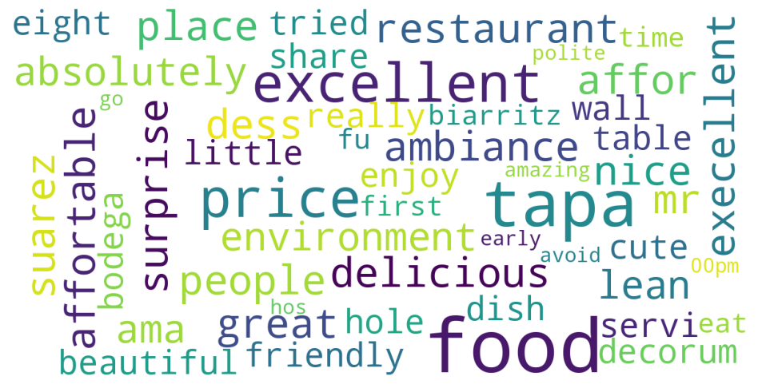

About Me
Hello! I’m Mahmuda Yasmin, an aspiring Data Scientist. I am passionate about Machine Learning and Artificial Intelligence. I am a skilled Statistician and I have 6+ years of professional experience as a Data Analyst. I would love to work on some really cool Data Science projects.
Professional Skills
R/Rstudio
Python
PowerBI
Tableau
MS Excel
SQL
Project Portfolio
Here are some awesome projects that I've worked on-

An NLP approch to predict Sentiments from Restaurant Reviews (Click here for details)
Online Reviews have a huge impact on Restaurant and Cafe Businesses. Platforms like TripAdvisor play a crucial role to impact a Customer's Decision and a Restaurant's Reputation. The Reviews posted online offer both opportunities and risk, so it is always important to analyze the Sentiment of the reviewers.
This large dataset is provided by @TripAdvisor , and can be found in here in Kaggle. It is conducted by adapting Topic Modelling (Unsupervised Learning) for Predicting Sentiments (Supervised Learning). Due to memory allocation, for this analysis the 'Barcelona' dataset was analyzed and runtime resources used in Google Colab platform.

An ML Approach for Analyzing Customer Churn (Click here for details)
Customer churn is the percentage of customers that stopped using the company's product or service during a certain time frame. It costs more to acquire new customers than it does to retain existing customers. This Business Metric helps to understand the reason behind the churn and to take effective initiatives to deal with the churn percentage.
The goal was to find out what factors may contribute to the Churn of the customers and provide supporting analysis to build an action plan to reduce the Churn.
The goal was to find out what factors may contribute to the Churn of the customers and provide supporting analysis to build an action plan to reduce the Churn.
This dataset is provided by @MavenAnalytics , and can be found in here in Kaggle
- Bayesian methods of hyperparameter optimization
- Clustering Case Study: Customer Segmentation with K-Means
- Cosine Similarity Calculations
- Create a Data Story - Film Genre Statistics
- Databricks ML project using PySpark
- Frequentist Inference Case Study
- Gradient Boosting Case Study
- GridSearch KNN Case Study
- Time Series Analysis
- Advanced Logistic Regression Case Study
- Random Forest Case Study-Covid19
- Advanced SQL Project
- Decision Tree Specialty Coffee Case Study
- Regression Case Study - The Red Wine Dataset Analysis
- London Borough Dataset Analysis
- Full Project - relax_inc_analysis
- Full Project - Ultimate Challenge analysis
Work Experience
Data Scientist Fellow at Springboard
Jan, 2023 - Present
• Mastering skills in Python, SQL, data analysis, data
visualization, hypothesis testing, and machine learning.
• Completing 600+ hours of hands-on coursework, with 1:1 expert mentor oversight, and completion of 2 in-depth portfolio projects.
• Completing 600+ hours of hands-on coursework, with 1:1 expert mentor oversight, and completion of 2 in-depth portfolio projects.
Data Visualization Analyst at PTI QCS
January, 2016 - 2022
• 6+ years of working experience in Automobile Manufacturing
Industry as Data Visualization Analyst focusing on Reporting, Dashboard Building and Maintenance.
• Designed efficient Workforce and Inventory Management plan for maximum utilization of manpower and resources.
• Specialized in Business Forecasting, Graphical Illustration and Report Generation.
• Specialized in application of Statistical Insights/ Techniques such as Time Series Analysis (Forecasting), A/B Testing (Hypothesis testing) etc.
• Experienced working with R, Python, Tableau, Power BI, MS Excel, Apache Spark, Azure ML Studio.
• Designed efficient Workforce and Inventory Management plan for maximum utilization of manpower and resources.
• Specialized in Business Forecasting, Graphical Illustration and Report Generation.
• Specialized in application of Statistical Insights/ Techniques such as Time Series Analysis (Forecasting), A/B Testing (Hypothesis testing) etc.
• Experienced working with R, Python, Tableau, Power BI, MS Excel, Apache Spark, Azure ML Studio.
Education
2023 - 2024
A 600+ hour online course that covers Machine Learning, Recommendation Systems, Time Series Analysis and Social Network Analysis in Python and successfully completed two final projects " An ML Approach to Classify the Prediction of Customer Churn" and "An NLP Approach to Predict Sentiments on Restaurant Reviews.
M.Sc in Statistics and Mathematics from University of Windsor, ON Canada
2012 - 2014
• M.Sc.Thesis Topic: "Efficiency and Coverage Probability
of the Over-Dispersion Parameter in Clustered Binomial
Data”, 2014.
• Master's International Entrance Scholarship Issued by University of Windsor, Jan 2013.
• Former Co-Ordinator of Centre for Teaching and Learning (CTL) resources for GTAs, Dept of Math and Stat, UofWindsor.
• Master's International Entrance Scholarship Issued by University of Windsor, Jan 2013.
• Former Co-Ordinator of Centre for Teaching and Learning (CTL) resources for GTAs, Dept of Math and Stat, UofWindsor.
M.Sc in Statistics from University of Dhaka
2009 - 2010
B.Sc (Honors) in Statistics from University of Dhaka
2003 - 2008
Contact
Address
Livonia, Michigan U.S.A
Phone
+1(248)270-2999
mahmuda.yasmin@hotmail.com
https://twitter.com/templateflip
https://www.facebook.com/templateflip
https://www.instagram.com/templateflip
https://github.com/templateflip